Surface types
ROTIR supports four surface geometries, selected by the surface_type field in the star parameters. Each geometry computes a different radial profile and gravity-darkened temperature map.
Sphere (surface_type = 0)
The simplest model: a uniform-radius sphere. Use this when the star is not significantly distorted.
star_params = (
surface_type = 0,
radius = 1.0, # angular radius (mas)
tpole = 5000.0, # temperature (K)
ldtype = 3, # Hestroffer limb darkening
ld1 = 0.23,
ld2 = 0.0,
inclination = 60.0, # degrees
position_angle = 30.0, # degrees
rotation_period = 10.0, # days
)A sphere produces a uniform temperature map — there is no oblateness, so the von Zeipel law gives constant temperature everywhere.
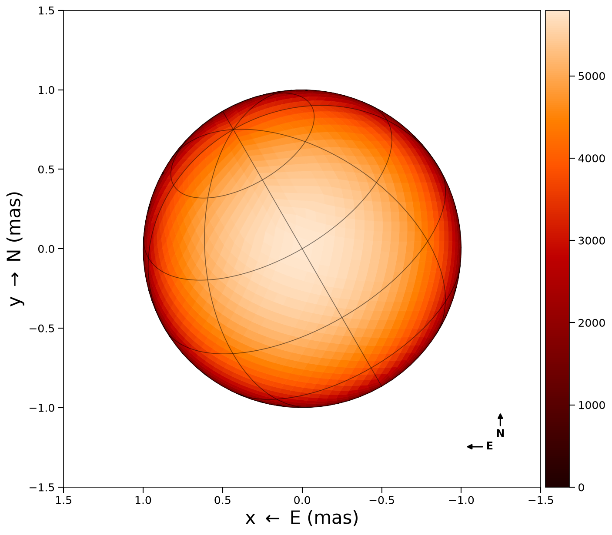
Triaxial ellipsoid (surface_type = 1)
Three independent semi-axes (rx, ry, rz) define an ellipsoidal surface. Useful for modeling tidally or rotationally distorted stars where the exact distortion mechanism is not assumed.
star_params = (
surface_type = 1,
radius_x = 1.5, # semi-axis along x (mas)
radius_y = 1.3, # semi-axis along y (mas)
radius_z = 1.1, # semi-axis along z (mas)
tpole = 4800.0,
ldtype = 3,
ld1 = 0.23,
ld2 = 0.0,
inclination = 78.0,
position_angle = 24.0,
rotation_period = 54.8,
beta = 0.08, # von Zeipel exponent
)The von Zeipel temperature map for an ellipsoid uses temperature_map_vonZeipel_ellipsoid, which computes the local gravity as g ~ 1/r^2 in ellipsoidal coordinates.
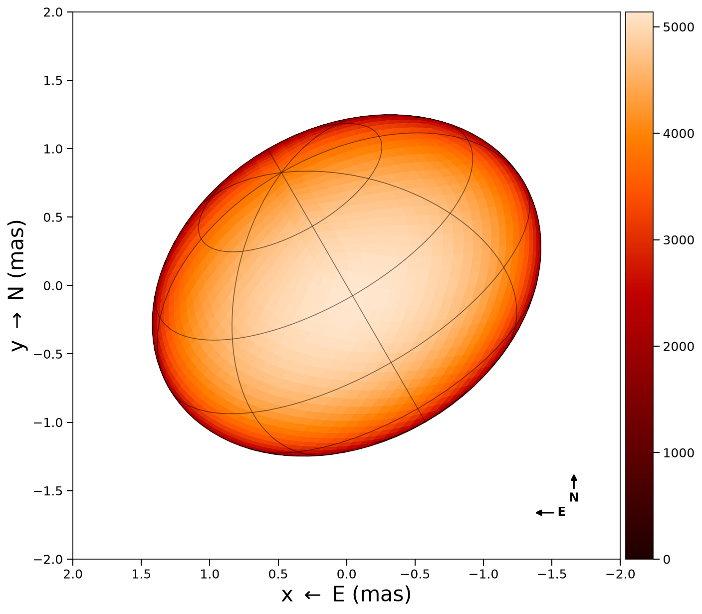
Rapid rotator (surface_type = 2)
A star distorted by centrifugal forces. The shape is determined by two parameters: the polar radius rpole and the fractional rotational velocity frac_escapevel (omega = vrot / vescape at the equator, ranging from 0 to 1).
The equatorial radius is given by the Roche model for a single rotating star (the equipotential surface of a rigidly rotating body with a point-mass gravitational field):
r(theta) = rpole * f(omega * sin(theta))where f(x) = 3*cos((pi + acos(x))/3) / x, theta is the colatitude, and omega is the frac_escapevel parameter (ratio of equatorial rotational velocity to breakup velocity, 0 to 1). At omega = 0 the star is a sphere (f = 1); at omega = 1 it reaches critical rotation.
star_params = (
surface_type = 2,
rpole = 1.37, # polar radius (mas)
tpole = 4800.0, # polar temperature (K)
ldtype = 3,
ld1 = 0.23,
ld2 = 0.0,
inclination = 78.0,
position_angle = 24.0,
rotation_period = 54.8,
beta = 0.08, # von Zeipel exponent: T ∝ g^β (e.g. 0.25 radiative, 0.08 convective)
frac_escapevel = 0.9, # omega: 0 = no rotation, 1 = critical rotation
B_rot = 0.0, # differential rotation coefficient
)The von Zeipel law gives the temperature map:
T_eff(theta) = T_pole * (g(theta) / g_pole)^betawhere the local effective gravity includes centrifugal and gravitational terms:
g_r = -GM/r^2 + r * (omega * sin(theta))^2
g_theta = omega^2 * r * sin(theta) * cos(theta)
g = sqrt(g_r^2 + g_theta^2)The equator-to-pole radius ratio and temperature contrast depend on omega. The temperature column uses beta = 0.25, the classical von Zeipel (1924) value for radiative envelopes. Typical reference values are beta = 0.25 (radiative, von Zeipel 1924) and beta = 0.08 (fully convective, Lucy 1967), but beta can take any value — Claret (2000) computes it as a continuous function of effective temperature and evolutionary stage.
| omega | Req / Rpole | Teq / Tpole (beta=0.25) |
|---|---|---|
| 0.0 | 1.00 | 1.00 |
| 0.5 | 1.04 | 0.96 |
| 0.9 | 1.28 | 0.80 |
| 0.99 | 1.45 | 0.68 |
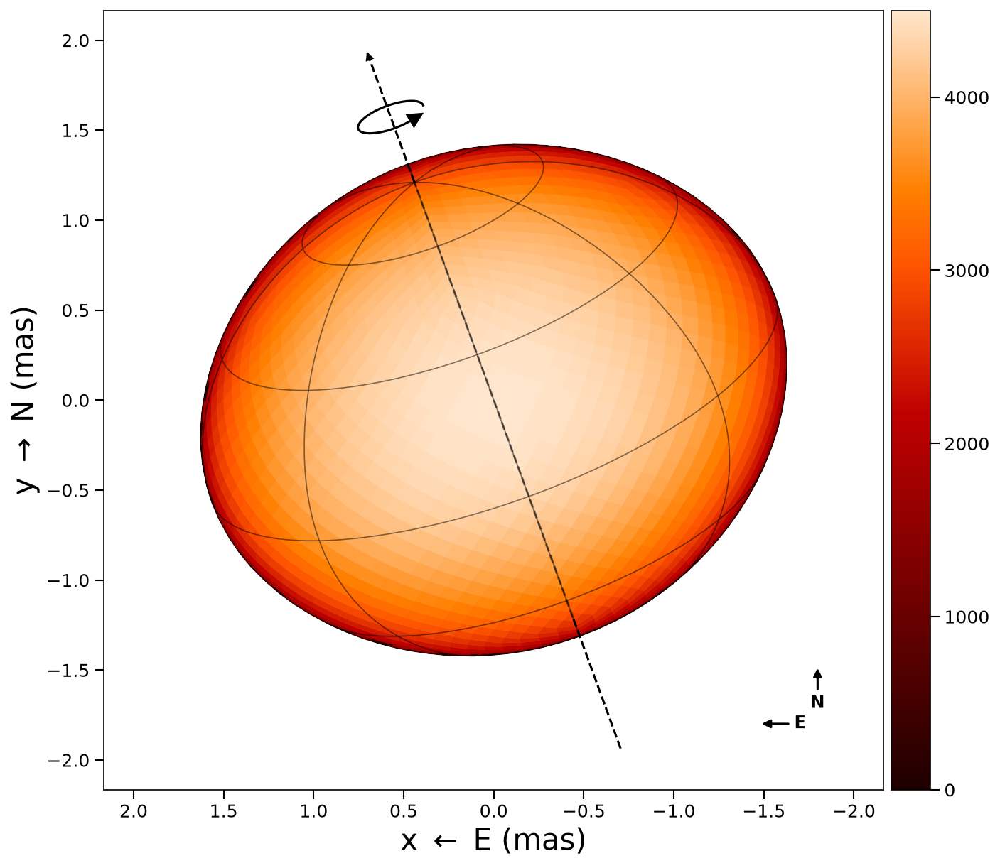
Choosing a gravity-darkening law
von Zeipel's law follows from assuming the star is barotropic, which is incompatible with radiative equilibrium in a rotating star. It is a slow-rotation law, and for a fast rotator it predicts too large a pole-to-equator contrast. Espinosa Lara & Rieutord (2011, A&A 533, A43) replace barotropy with the assumption that the radiative flux is anti-parallel to the local effective gravity, which holds to better than half a degree even near break-up, and add a latitudinal flux factor to the same expression. Set gravity_law to pick between them:
rapid_rotator = (
surface_type = 2,
frac_escapevel = 0.95,
beta = 0.25,
gravity_law = :elr, # or :vonzeipel (the default), or the codes 2 and 1
# ... the rest as above
)The two agree at slow rotation and diverge as the star spins up:
| frac_escapevel | omega | Req/Rp | Teq/Tp von Zeipel | Teq/Tp ELR | ELR warmer |
|---|---|---|---|---|---|
| 0.00 | 0.000 | 1.00 | 1.000 | 1.000 | 0.0 % |
| 0.50 | 0.289 | 1.04 | 0.958 | 0.961 | 0.2 % |
| 0.70 | 0.437 | 1.10 | 0.906 | 0.916 | 1.1 % |
| 0.90 | 0.657 | 1.22 | 0.788 | 0.831 | 5.5 % |
| 0.95 | 0.750 | 1.28 | 0.719 | 0.789 | 9.8 % |
| 0.99 | 0.883 | 1.39 | 0.581 | 0.713 | 22.6 % |
Use von Zeipel below about frac_escapevel = 0.5, where the difference is smaller than any interferometer can measure, and ELR above it. In the middle, fit both and compare the evidence: the two laws have the same parameters, so the log-evidence difference from fit_parametric_nested or fit_parametric_ultranest is a Bayes factor between them directly.
beta stays free under both laws. Espinosa Lara & Rieutord derive their law with the exponent pinned at 1/4, which assumes a grey radiative atmosphere; a real atmosphere, a convective envelope, or a limb-darkening law absorbing part of the latitudinal profile all move it. To recover their published result exactly, leave beta out of the fit's free parameters with its value at 0.25.
Which law you use interacts with limb darkening. Forcing von Zeipel onto a fast rotator asks the fit for more pole-to-equator contrast than the star has, and the limb-darkening coefficients are what absorb the difference — a fitted coefficient that comes out negative on a rapid rotator is a signal to try ELR before believing the star has inverted limb darkening.
References
The two implemented laws:
- von Zeipel, H. 1924, The radiative equilibrium of a rotating system of gaseous masses, MNRAS 84, 665. doi:10.1093/mnras/84.9.665
- Espinosa Lara, F. & Rieutord, M. 2011, Gravity darkening in rotating stars, A&A 533, A43. doi:10.1051/0004-6361/201117252 — their eq. (31) is the law, eq. (24) defines the auxiliary angle it is built on, and eq. (32) is the closed-form equator-to-pole ratio the implementation is checked against.
Two further laws that ROTIR does not implement, recorded because they are the natural next questions rather than oversights:
- Espinosa Lara, F. & Rieutord, M. 2012, Gravity darkening in binary stars, A&A 547, A32. doi:10.1051/0004-6361/201219942 — the same construction where the effective gravity comes from the Roche potential of two bodies. It belongs to
surface_type = 3, not to the rapid rotator, sogravity_lawdoes not offer it. - Zorec, J., Rieutord, M., Espinosa Lara, F., et al. 2017, Gravity darkening in stars with surface differential rotation, A&A 606, A32. doi:10.1051/0004-6361/201730818 — generalises the 2011 law to a differentially rotating surface. Such a surface has no rotational potential, so its shape no longer follows from the Roche model either, and adding it means a new radius solve rather than a new temperature map.
The exponent's reference values come from Lucy, L. B. 1967 (Z. Astrophys. 65, 89) for convective envelopes and Claret, A. 2000 for the continuous dependence on effective temperature and evolutionary state.
Oblateness progression
Increasing frac_escapevel (omega) from 0 to near-critical rotation:
| omega = 0.0 | omega = 0.5 | omega = 0.9 | omega = 0.99 |
|---|---|---|---|
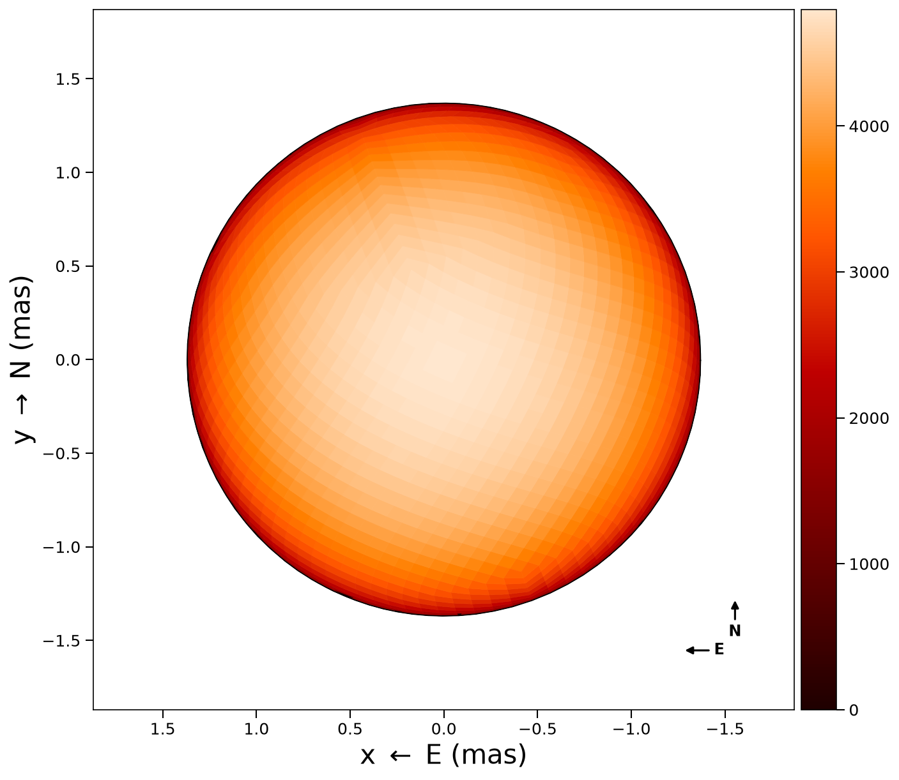 | 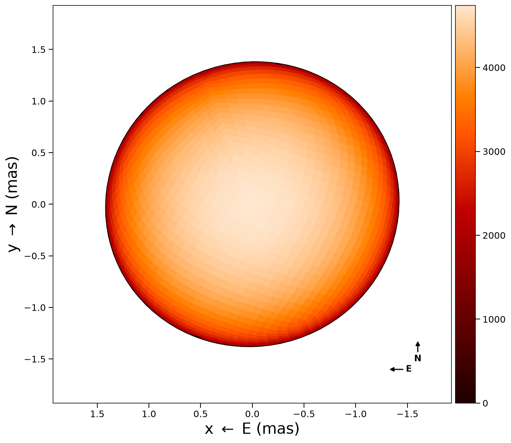 | 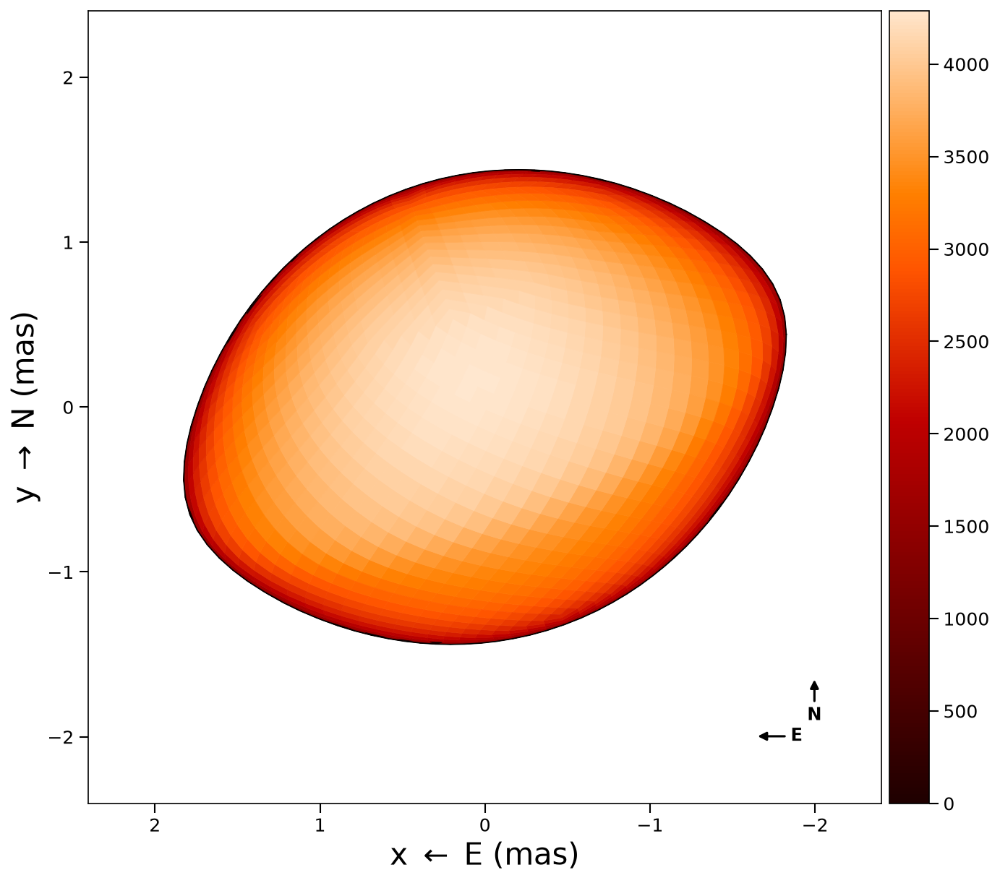 |
Helper functions
oblate_const(star_params)– approximates the rapid rotator by an oblate spheroid, returning(a, b, c)semi-axescalc_omega(rpole, oblateness)– converts oblateness to fractional angular velocitycalc_rotspin(rpole, R_equ, omega, Mass)– computes rotational velocity (km/s), period (days), and angular velocity (rad/day)
Roche lobe (surface_type = 3)
For a star filling (or nearly filling) its Roche lobe in a binary system. The shape is determined by the binary potential, mass ratio, and separation.
roche_params = (
surface_type = 3,
rpole = 0.355, # polar radius (mas)
tpole = 4800.0,
ldtype = 3,
ld1 = 0.23,
ld2 = 0.0,
inclination = 0.0,
position_angle = 0.0,
rotation_period = 5.0,
beta = 0.08,
# Binary / Roche parameters
d = 77.0, # distance (parsecs)
q = 1.0, # mass ratio M2/M1
fillout_factor_primary = -1, # if negative, rpole defines potential
# Orbital elements
i = 0.0, # orbital inclination (degrees)
Omega = 0.0, # longitude of ascending node (degrees)
omega = 0.0, # argument of periapsis (degrees)
P = 5.0, # orbital period (days)
a = 1.0, # semi-major axis (mas)
e = 0.0, # eccentricity
T0 = 0.0, # time of periastron (JD)
dP = 0.0, # period derivative (days/day)
domega = 0.0, # periapsis precession (degrees/day)
)The Roche potential is solved numerically using Halley's method (cubic convergence) to find the radius r(theta, phi) at each vertex.
Fillout factor vs. polar radius
Two ways to specify the surface:
- Polar radius (
rpole): directly sets the potential level. Usefillout_factor_primary = -1to disable the fillout factor. - Fillout factor: the ratio of the surface potential to the L1 potential. A value of 1.0 means the star exactly fills its Roche lobe.
Conversion functions:
fillout_to_rpole(fillout, D, q, async_ratio)rpole_to_fillout(rpole, D, q, async_ratio)max_rpole(D, roche_parameters)– maximum polar radius (L1 point)
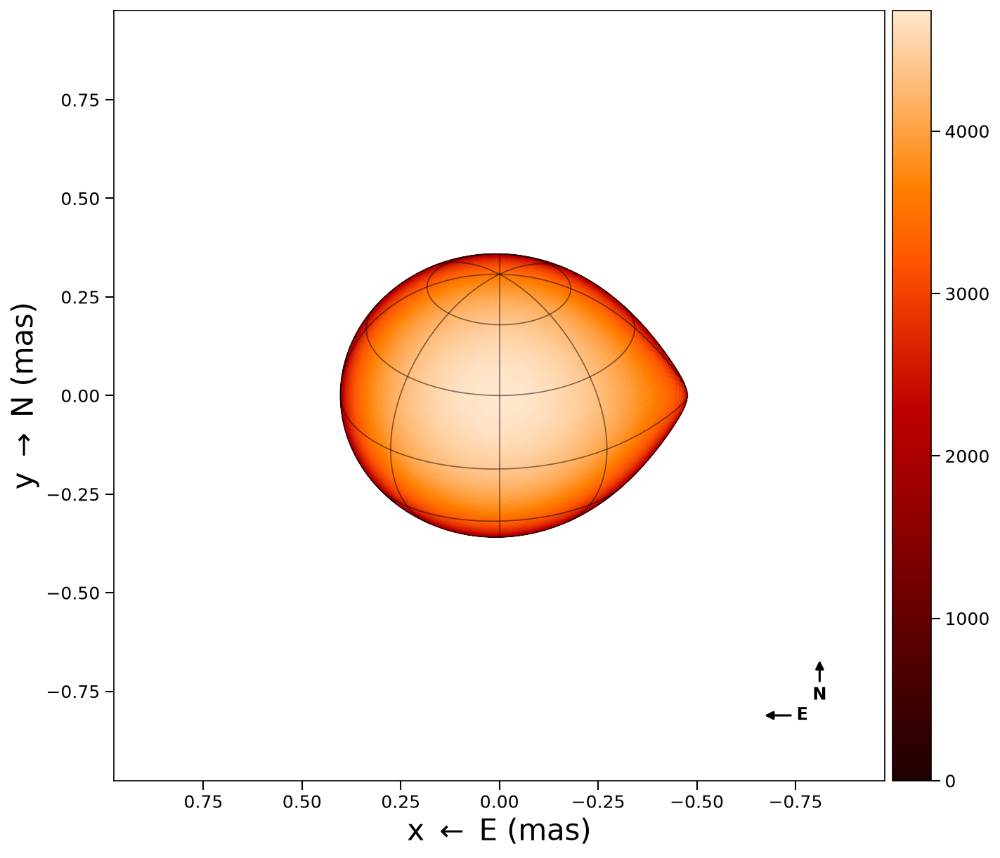
The graticule traces the true Roche shape: the meridians run all the way out to the tidal point on the right, and the parallels are visibly not circles. There is no closed form to draw them from, so draw_graticules interpolates the mesh's own r(θ, φ) — see Plotting.
Fillout factor progression
Increasing fillout factor from 90% to 99% of the Roche lobe:
| 90% | 95% | 98% | 99% |
|---|---|---|---|
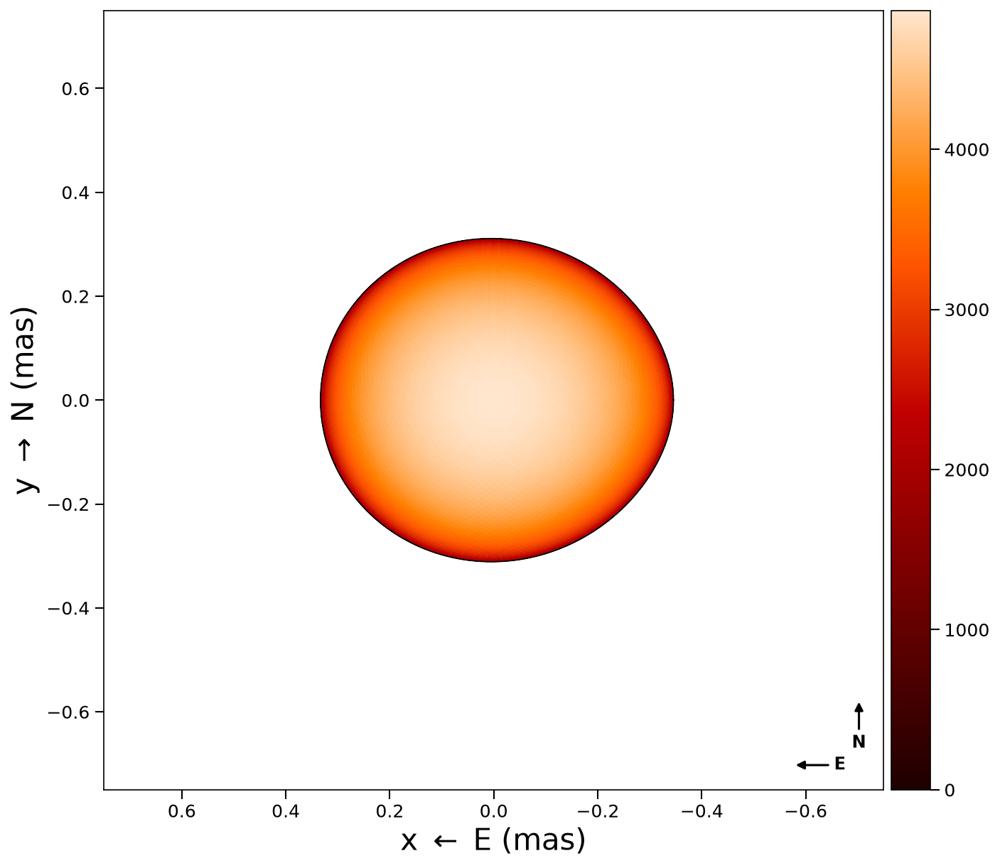 | 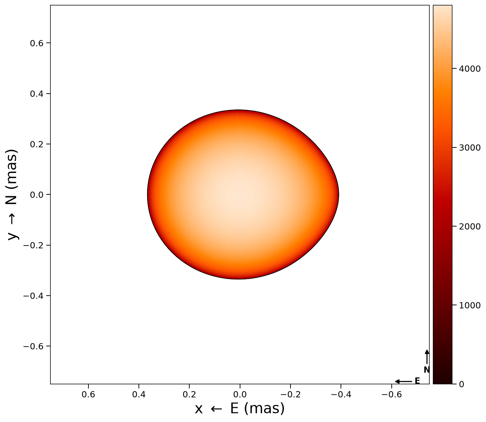 | 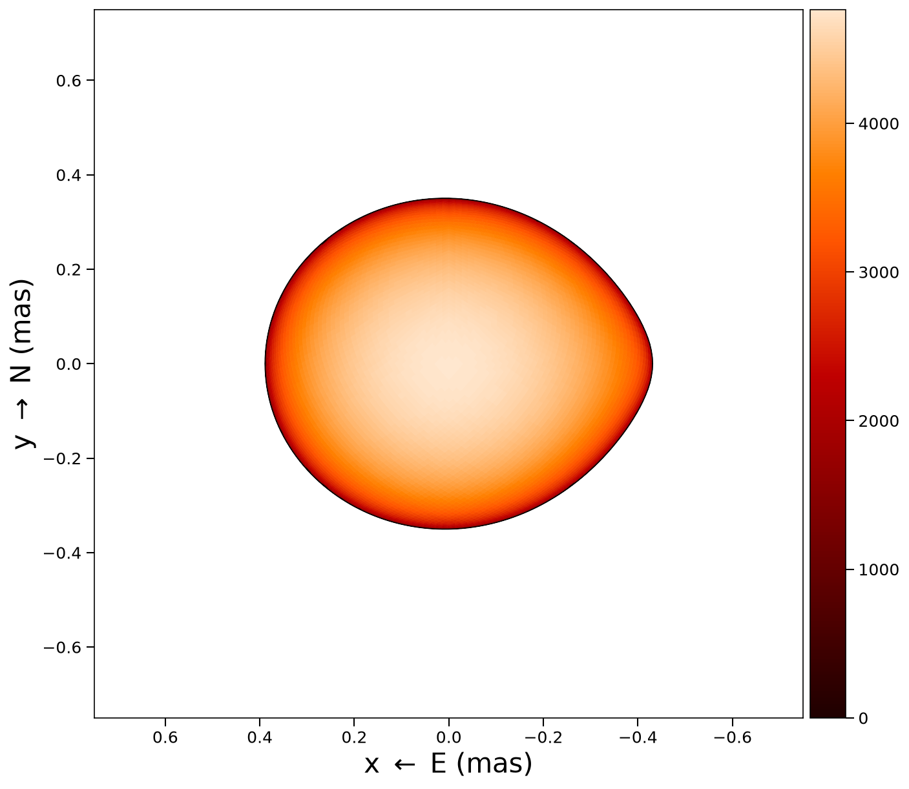 | 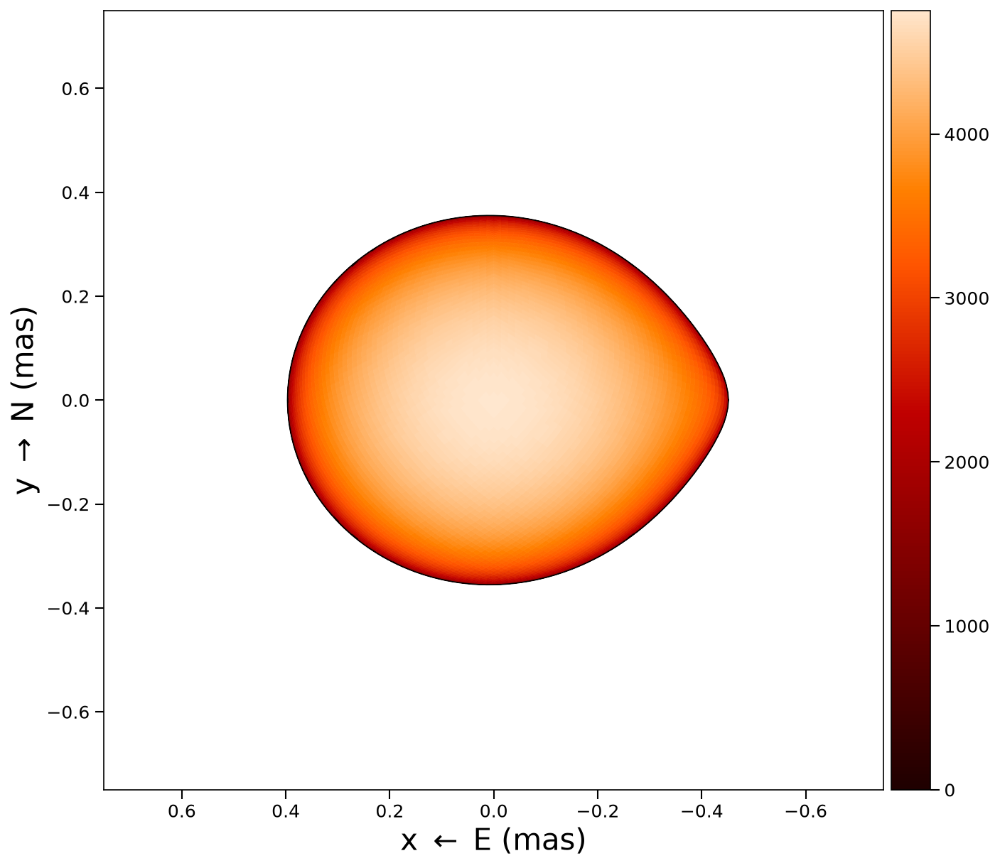 |
Roche lobe radius estimates
radius_equivalent_eggleton(q)– Eggleton (1983) approximationradius_leahy(q)– Leahy & Leahy (2015) formula
Temperature maps
For all surface types, a parametric temperature map (von Zeipel gravity darkening) can be generated:
stars = create_star_multiepochs(tessels, star_params, tepochs)
tmap = parametric_temperature_map(star_params, stars[1])This dispatches to the appropriate function based on surface_type:
- Type 0/1:
temperature_map_vonZeipel_ellipsoid - Type 2:
temperature_map_vonZeipel_rapid_rotator - Type 3:
temperature_map_vonZeipel_roche_single
Limb darkening
Three limb-darkening laws are available, selected by ldtype:
ldtype | Law | Formula |
|---|---|---|
| 1 | Linear | I/I_0 = 1 - ld1*(1 - mu) |
| 2 | Quadratic | I/I_0 = 1 - ld1*(1 - mu) - ld2*(1 - mu^2) |
| 3 | Hestroffer (power) | I/I_0 = mu^ld1 |
where mu = cos(theta) is the cosine of the angle between the surface normal and the line of sight.